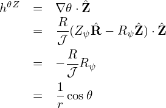
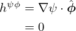
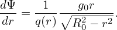
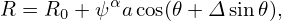
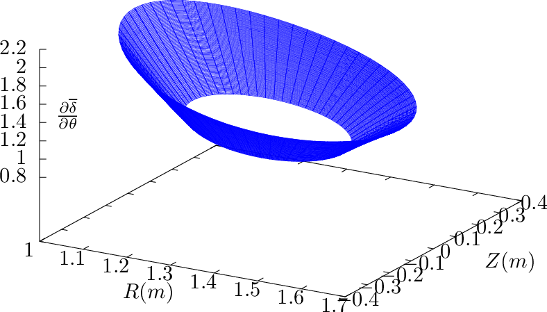
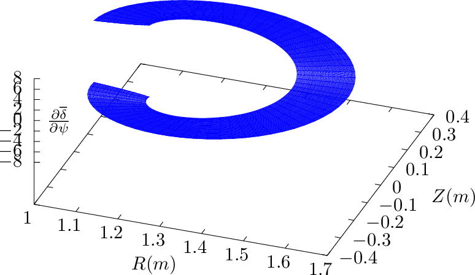

![- ( ( ) ) ( ) [ ]
dδ = 2dqarctan (∘R0-−-r)-tan 𝜃 + 2q---(-----1-------)--tan 𝜃 -d (∘R0-−-r)-
dr dr R20 − r2 2 (√R0−r)- ( 𝜃) 2 2 dr R20 − r2
1+ R20−r2 tan 2
( ( ) )
= 2dqarctan (∘R0-−-r)-tan 𝜃
dr R20 − r2 2
1 ( 𝜃) − R0
+ 2q---(----------(--))2-tan 2 (R--+r)∘R2--−-r2
1+ (√RR02−−rr)2 tan 𝜃2 0 0
0](tokamak_equilibrium501x.png)
Let ψ = r and define hψR = ∇ψ ⋅, hαR = ∇α⋅, etc. Explicit expressions for these elements can be written as
|
| (379) |
Using expression (373), dδ∕dr can be evaluated analytically, yielding
| arctan(x) = |
(I did not remember this formula and I use SymPy to obtain this.) These expressions are used to benchmark the numerical code that assume general flux surface shapes. The results show that the code gives correct result when concentric circular flux surfaces are used.
Taking the 𝜃 derivative of δ, equation (373) is written as (using Sympy)
|
| (380) |
where
|
| (381) |
Equation (370) should be equal to  given by Eq. (370). This was verified numerically.
Taking the r derivative of Eq. (353), we obtain
|
| (382) |
i.e.,
|
| (383) |
|
| (384) |
 